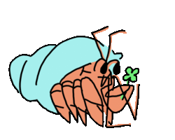

title: Distributed secure routing in permissionless flat networks class: animation-fade layout: true <!-- This slide will serve as the base layout for all your slides --> .bottom-bar[ {{title}} ] --- class: impact .big[{{title}}] .soft[.small[Benedict Lau // Radical Networks 2018]] --- class: impact .col-3[ </img> ] .col-3[ <img width="100" src="assets/aether.png"></img> ] .col-3[ <img width="100" src="assets/dat.png"></img> ] .col-3[ <img width="100" src="assets/ipfs.svg"></img> ] .soft[<i class="fas fa-ellipsis-v"></i>] -- .big[.big[.big[IP .hi1[<i class="fas fa-map-pin"></i>] address .hi2[<i class="fas fa-box"></i>] packet]]] .soft[<i class="fas fa-ellipsis-v"></i>] -- .col-2[ .big[.big[<i class="fas fa-wifi"></i>]] ] .col-2[ .big[.big[<i class="fab fa-bluetooth-b"></i>]] ] .col-2[ .big[.big[<i class="fas fa-server"></i>]] ] .col-2[ .big[.big[<i class="fas fa-mobile-alt"></i>]] ] .col-2[ .big[.big[<i class="fas fa-laptop"></i>]] ] .col-2[ .big[.big[<i class="fas fa-plug"></i>]] ] --- class: alt-bg center # Internet BGP inter-domain routing <img width="700" src="assets/autonomous-systems.png"></img> .soft[.small[.small[_<i class="far fa-images"></i> https://csperkins.org/research/thesis-phd-strowes.pdf_]]] --- class: impact .small[For a large network to scale, it must be subnetted into smaller, more easily manageable networks, which then must in turn be networked together (to form a network of networks from inter-network connections, i.e. the internet). This requires some level of expertise and planning to do, and ] .big[tends to favor hierarchies wherein small networks are largely at the mercy of a larger network] .small[(e.g. the only connection your LAN has to another network is your connection to an ISP, and “peering” or directly connecting to your neighbor’s LAN is virtually unheard of).] .soft[.small[.small[_<i class="far fa-clone"></i> Arceliar, Yggdrasil: The World Tree, https://yggdrasil-network.github.io/2018/07/17/world-tree.html_]]] --- class: impact .big[.hi1[Distributed] .hi2[secure] routing in .hi3[permissionless] .hi4[flat] networks] --- class: dark-slide middle .big[.hi1[Distributed] .small[every node is capable of _compact routing_]] -- .big[.hi2[Secure] .small[end-to-end encryption • route around malicious nodes]] -- .big[.hi3[Permissionless] .small[IP address self-assignment • autonomous network]] -- .big[.hi4[Flat] .small[random IP addresses • no subnet hierarchy]] --- class: dark-slide ## Compact routing <i class="fas fa-ellipsis-v"></i> in comparison to BGP inter-domain routing -- - Keep small amounts of routing state at each router, rather than piling all that work onto the core network infrastructure -- - Without the full network view, a node cannot always determine shortest path .em[<sup>e.g.</sup> Dijkstra's algorithm as in OSPF] -- - Have routing table grow sublinearly with number of nodes, while getting close to shortest path routing with upper bound -- - Name-independent schemes that require no pre-processing are suitable for an unmanaged permissionless network --- class: dark-slide .col-7[ # <i class="fas fa-directions"></i> Hyperboria </img> .small[_<i class="far fa-images"></i> https://www.fc00.org_] ] .col-5[ ### cjdns - Auto-configure overlay network - Secure all network traffic with end-to-end encryption: - .alt[Curve25519] .small[encryption keys] - .alt[Ed25519] .small[signatures] - .alt[XSalsa20] .small[stream cipher] - .alt[Poly1305] .small[MAC] - Self-assign IPv6 in `fc00::/8` from cryptographic keys - Source route with Kademlia-like distributed hash table ] --- class: dark-slide ## Self-assignment of IP addresses <i class="fas fa-ellipsis-v"></i> for permissionless network participation -- - Perform two rounds of SHA-512 on .alt[Curve25519 public key] then truncate to derive IPv6 address - `fc00::/8` address space has 2<sup>120</sup> addresses -- <br /> ### Birthday problem >1 in 1,329,227,995,784,915,872,903,807,060,280,344,576 chance of generating the same IPv6. Feeling Lucky? .small[_<i class="far fa-clone"></i> https://github.com/cjdelisle/cjdns/blob/master/doc/notes/arc-workings.md_] --- class: dark-slide middle .big[.hi1[Distributed] .small[.soft[every node is capable of _compact routing_]]] .big[.hi2[Secure] .small[end-to-end encryption .soft[• route around malicious nodes]]] .big[.hi3[Permissionless] .small[IP address self-assignment .soft[•] autonomous network]] .big[.hi4[Flat] .small[random IP addresses .soft[• no subnet hierarchy]]] --- class: alt-bg .col-8[ ## The Kademlia DHT ### Laying out IP addresses <img width="770" src="assets/kademlia-map.png"></img> ] .col-4[ - Node .code[.hi1[0011]] has physical peers to _some_ neighbourhoods - Node .code[.hi1[0011]] learns paths to _every_ neighbourhood - Each node keeps a routing table at each .alt[XOR distance] - Each node knows its neighbourhood well relative to distant ones ] .small[_<i class="far fa-images"></i> https://pdos.csail.mit.edu/~petar/papers/maymounkov-kademlia-lncs.pdf_] --- class: alt-bg .col-7[ ### Searching the DHT <img width="580" src="assets/kademlia-search.png"></img> .small[_<i class="far fa-images"></i> https://pdos.csail.mit.edu/~petar/papers/maymounkov-kademlia-lncs.pdf_] ] .col-5[ #### Node .code[.hi1[0011]] searches .code[.hi2[1110]]: - .code[.hi1[0011]] knows path to .code[.hi3[101]] and makes first query to learn .code[.em[1101]] - .code[.hi1[0011]] makes successive queries .code[1] to .code[4] to reach .code[.hi2[1110]] - .code[.hi1[0011]] calculates XOR distance: >.code[.hi1[0011]] >.code[.hi2[1110]] >.code[.em[----.small[<i class="fas fa-plus-circle"></i>]]] >.code[.alt[**1**101]] .em[.small[<i class="fas fa-arrow-left"></i> XOR distance]] - .code[.hi1[0011]] adds newly learnt path to its routing table at .code[.alt[**1**---]] bucket ] --- class: dark-slide middle .big[.hi1[Distributed] .small[every node is capable of _compact routing_]] .big[.hi2[Secure] .small[.soft[end-to-end encryption • route around malicious nodes]]] .big[.hi3[Permissionless] .small[.soft[IP address self-assignment • autonomous network]]] .big[.hi4[Flat] .small[.soft[random IP addresses •] no subnet hierarchy]] --- class: impact # <i class="far fa-question-circle"></i> .big[.hi1[Rick .code[1101]] wants to send a packet to .hi2[.code[1110]]] --- class: dark-slide ## Source routing #### Rick assembles the set of directors and sends <i class="fas fa-box"></i> to his peer Morty | | | | | | | | |:--|:--|:--|:--|:--|:--|:--| | `0000000000000000000000000` | `0001` | `101011` | `011010` | `100101101` | `10111` | .code[.hi1[**0100011**]] | | .big[<i class="far fa-circle"></i>] unused space | .big[<i class="fas fa-arrow-alt-circle-down"></i>] | .big[<i class="fas fa-arrow-alt-circle-right"></i>] | .big[<i class="fas fa-arrow-alt-circle-right"></i>] | .big[<i class="fas fa-arrow-alt-circle-up"></i>] | .big[<i class="fas fa-arrow-alt-circle-down"></i>] | .big[.hi1[<i class="fas fa-arrow-alt-circle-right"></i>]] | -- .small[<i class="fas fa-ellipsis-v"></i>] #### Morty pops the .hi1[<i class="fas fa-arrow-alt-circle-right"></i>] director and sends it down the .hi1[<i class="fas fa-arrow-alt-circle-right"></i>] network interface | | | | | | | | |:--|:--|:--|:--|:--|:--|:--| | .code[.hi1[**1000000**]] | `0000000000000000000000000` | `0001` | `101011` | `011010` | `100101101` | .code[.hi2[**10111**]] | | .big[.hi1[<i class="far fa-arrow-alt-circle-right"></i>]] | .big[<i class="far fa-circle"></i>] unused space | .big[<i class="fas fa-arrow-alt-circle-down"></i>] | .big[<i class="fas fa-arrow-alt-circle-right"></i>] | .big[<i class="fas fa-arrow-alt-circle-right"></i>] | .big[<i class="fas fa-arrow-alt-circle-up"></i>] | .big[.hi2[<i class="fas fa-arrow-alt-circle-down"></i>]] | -- .small[<i class="fas fa-ellipsis-v"></i>] #### The <i class="fas fa-box"></i> reaches Morty's .hi1[<i class="fas fa-arrow-alt-circle-right"></i>] peer, Summer, and she sees the .hi2[<i class="fas fa-arrow-alt-circle-down"></i>] director --- class: dark-slide middle .big[.hi1[Distributed] .small[every node is capable of _compact routing_]] .big[.hi2[Secure] .small[.soft[end-to-end encryption •] route around malicious nodes]] .big[.hi3[Permissionless] .small[.soft[IP address self-assignment • autonomous network]]] .big[.hi4[Flat] .small[.soft[random IP addresses • no subnet hierarchy]]] --- class: dark-slide # <i class="fas fa-directions"></i> Hyperboria <i class="fas fa-ellipsis-v"></i> with more than 1000 nodes mostly tunneled over Internet links -- ### DHT source routing limitations - XOR address space distance and DHT does not resemble physical network topology - Nodes lack local visibility to link quality typical of wireless links - 64-bit packet header cannot fit all the directors for long paths with many hops -- ### Supernodes - Supernodes have full network view and offer path discovery service to subnodes - Traffic is still source routed and distributed throughout the mesh --- class: alt-bg # <i class="fas fa-sitemap"></i> Yggdrasil Network .col-4[ <img width="310" src="assets/yggdrasil.jpg"></img> ] .col-8[ ### Yggdrasil <i class="fas fa-ellipsis-v"></i> the mythical world tree of Norse cosmology - Auto-configure a self-addressing encrypted network similar to cjdns - Route traffic via paths resembling physical topology - Allow all nodes to make the same assumptions about the network topology without keeping a full view - Guarantee a path to every node, which although unbound in theory, is usually close to the shortest path ] .small[_<i class="far fa-images"></i> https://en.wikipedia.org/wiki/Yggdrasil#/media/File:The_Ash_Yggdrasil_by_Friedrich_Wilhelm_Heine.jpg_] --- class: dark-slide ## Routing in Yggdrasil - Switch layer creates a .alt[globally agreed spanning tree <i class="fas fa-sitemap"></i>] -- - A DHT is used to look up the .alt[<i class="fas fa-sitemap"></i>] coordinates for a given IP address -- - .alt[<i class="fas fa-sitemap"></i>] edges are always direct peers, selected based on peering stability -- - .alt[<i class="fas fa-sitemap"></i>] coordinates are shared with peers and cryptographically verifiable from .alt[<i class="fas fa-sitemap"></i>] root -- - Switch layer uses .alt[<i class="fas fa-sitemap"></i>] coordinate system for greedy embedded routing -- - Each node keeps a partial view of .alt[<i class="fas fa-sitemap"></i>] where locally stored state information scale at `O(p*log(n))` for `p` peers in a network with `n` nodes -- - Routing traffic by walking .alt[<i class="fas fa-sitemap"></i>] represents a worst-case path with guaranteed reachablity, since greedy routing often take shortcuts not shown on .alt[<i class="fas fa-sitemap"></i>] --- class: alt-bg ## Yggdrasil global spanning tree <i class="fas fa-ellipsis-v"></i> view from node .hi2[.code[**3efd**] .small[<i class="fas fa-map-pin"></i> .code[[ 3 ]]]] .center[<img width="1100" src="assets/yggdrasil-map-1.png"></img>] -- <i class="fas fa-ellipsis-v"></i> to .hi1[.code[**d40c**] .small[<i class="fas fa-map-pin"></i> .code[[ 3 5 2 ]]]] -- - Tree path: .hi2[.code[[ 3 ]]] .small[<i class="fas fa-arrow-right"></i>] .em[.code[[ 3 5 ]]] .small[<i class="fas fa-arrow-right"></i>] .hi1[.code[[ 3 5 2 ]]] -- - Greedy path: .hi2[.code[[ 3 ]]] .small[<i class="fas fa-arrow-right"></i>] .hi1[.code[[ 3 5 2 ]]] --- class: impact .col-3[ </img> ] .col-3[ <img width="100" src="assets/aether.png"></img> ] .col-3[ <img width="100" src="assets/dat.png"></img> ] .col-3[ <img width="100" src="assets/ipfs.svg"></img> ] .soft[<i class="fas fa-ellipsis-v"></i>] .big[.big[.big[.hi1[<i class="fas fa-directions"></i>] cjdns .hi2[<i class="fas fa-sitemap"></i>] Yggdrasil]]] .soft[<i class="fas fa-ellipsis-v"></i>] .col-2[ .big[.big[<i class="fas fa-wifi"></i>]] ] .col-2[ .big[.big[<i class="fab fa-bluetooth-b"></i>]] ] .col-2[ .big[.big[<i class="fas fa-server"></i>]] ] .col-2[ .big[.big[<i class="fas fa-mobile-alt"></i>]] ] .col-2[ .big[.big[<i class="fas fa-laptop"></i>]] ] .col-2[ .big[.big[<i class="fas fa-plug"></i>]] ] --- class: impact alt-bg </img> .code[.soft[.big[**\#tomesh:tomesh.net**] .small[.small[<i class="fas fa-link"></i>] **freenode/\#tomesh**]]] .soft[.small[<i class="fas fa-ellipsis-h"></i>]] .code[.soft[**\#cjdns:matrix.org** .small[.small[<i class="fas fa-link"></i>] **efnet/\#cjdns**]]] .code[.soft[**\#yggdrasil:matrix.org** .small[.small[<i class="fas fa-link"></i>] **freenode/\#yggdrasil**]]]